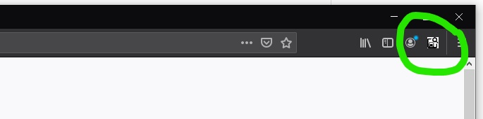

Salvage Search is a browser plugin that makes it easy to search inventory websites for vehicles. Select your browser below to install it. A Salvage Search icon will appear in your toolbar, as below.
To use the plugin, copy a VIN (ctrl-C or right click > copy), then click the Salvage Search button. Search result tabs will open all at once.
To change which salvage yards are included in the search: On Firefox, right click the icon, select "manage extension," then click the options tab. On Chrome, right click the icon and select "options." A Chrome extension is forthcoming, but is not yet released.